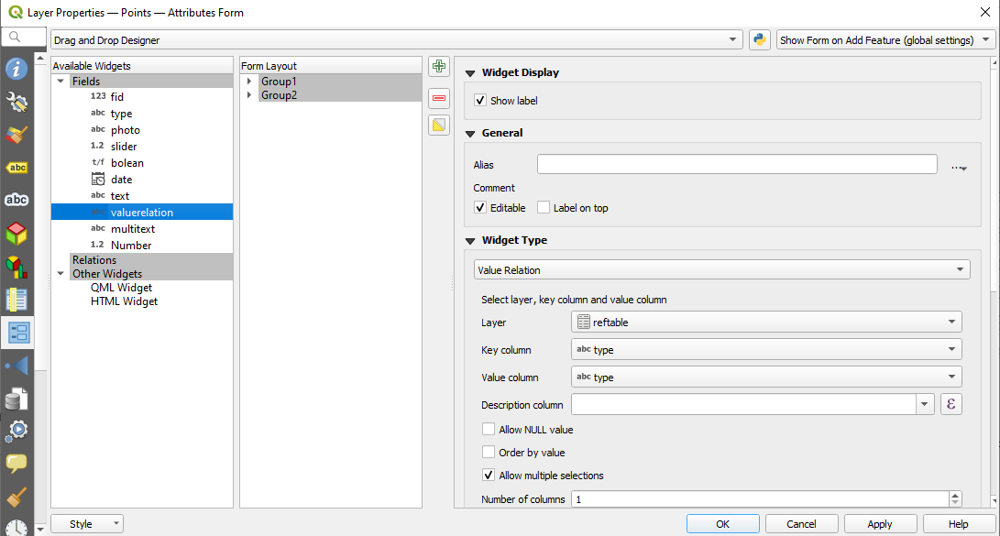
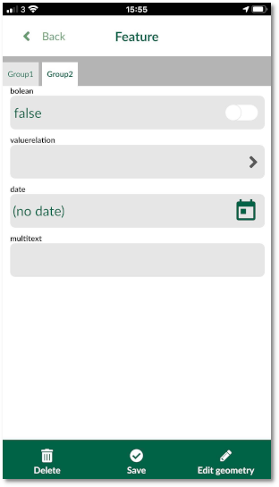
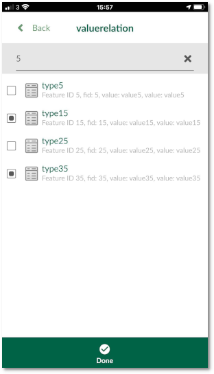
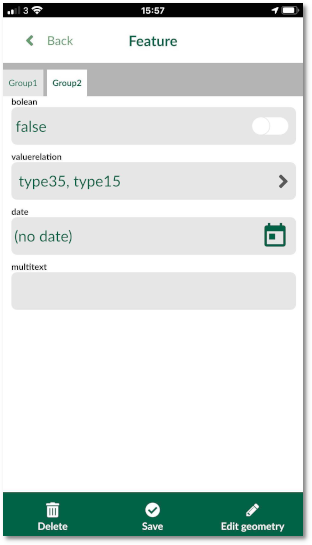

Drop-down (value relation) in forms
Value Relation widget is very similar to the Value Map tool, but the values for the drop-down menu come from another table (e.g. a CSV or another Geopackage table).
The advantage of having this widget:
-
Ability to edit the values in the field. For example, if you have missed a value in your list for the drop-down menu, you can edit the table in Input and add the value. See Working with non-spatial tables section for more information.
-
Ability to search the values: when you have a large list of values, it will become cumbersome to find the right value. With this widget, you will be able to search for values in the list.
-
Selecting multiple values
QGIS
To set up a value relation widget:
- Download and open this example project in QGIS
- Notice the extra table in your layer tree: reftable
- From the layer panel, right-click on Points layer and select Properties
- In the new window, select Attributes form

- Select valuerelation field under the right column (Available Widgets)
- Under the Widget Display:
- Under Widget Type section:
- From the drop-down menu, select Value Relation
- For Layer select reftable
- For Key column and Value column, select type
- Check the box for Allow multiple selections
Ensure to save and synchronise your project.
Input
To use the drop-down widget in the form from Input:
- Open Input on your device and from Projects > Explore download lutraconsulting/test_forms
- Open the project
- Select Record and add a point
- The form will appear
- Under Group2 tab, you can select the valuerelation from the drop-down menu:
  